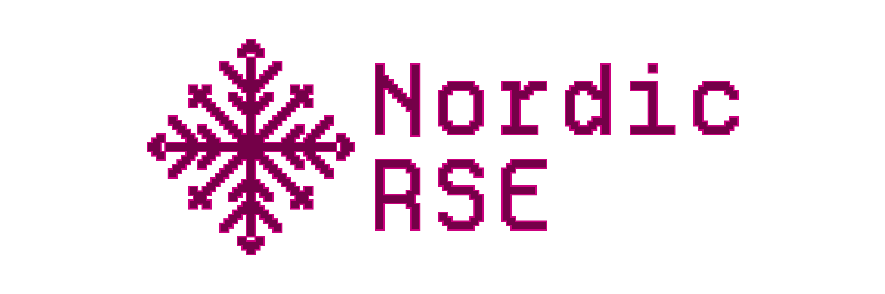

Nordic-RSE operation manuals

Warning
This page is a work in progress.
This is Nordic-RSE’s internal handbook: manuals, checklists, and templates for how we actually run the association, its board, its conferences, and its website. It’s written for people organizing or helping run things — board members, conference organizers, and anyone taking on a task for Nordic-RSE — rather than for the general public.
For that public-facing side — who we are, our events, our blog, how to join — see nordic-rse.org instead. This handbook is the “how do we actually do this” companion to that site.
These pages document past history, but they don’t dictate future. They are a starting point: feel free to be adventurous.
New here? Start with onboarding.md.
New team member onboarding
Must know and do
The Nordic Research Software Engineers association (in short, Nordic-RSE) is a grass-root association that aims at providing a professional network to Research Software Engineers (RSE) in the Nordics and Baltics. While the term “RSE” is not as of yet of common use here, Nordic-RSE is currently a community for people who operate at the interface between research and digital technologies (software, computing, data). We operate on an inclusivity base: if you think that the above description is you, then you are welcome in our association!
See community.md for the association’s aims, and our Code of Conduct, which applies to all our spaces.
Connect
Chat - Zulip: https://coderefinery.zulipchat.com — our main communication platform, shared with the CodeRefinery community. This makes you part of the community.
introduce yourself in #greetings>introductions
lots of optional channels, check them out!
Weekly coffee break: Thursdays at 9:00 Europe/Stockholm (10:00 Europe/Helsinki), same Zoom link. Not a planning meeting — an informal chat and a great way to get to know who is around.
Bi-weekly meetings: notes and agenda, Zoom link, every second Thursday at 13:00 Europe/Stockholm (starting 2025-08-21). These are our planning meetings — join if you would like to help with activities or shape the association’s future. Everybody welcome; you do not have to be a member of the association to join.
Mailing list: sign up here — best way to stay in contact without interacting much. No need to be a member of the association to sign up.
Association membership: membership form and membership fee — see membership.md for how to join and what it enables.
Extras
Now you know the basics, here are a few more things you can look into if time :)
Events
Events calendar: https://nordic-rse.org/events/#calendar (add to your calendars)
Events specific channels on Zulip chat
News
Mastodon: https://fosstodon.org/@nordic_rse
Collections and sources
See website.md for the website’s source and how to contribute to it.
We collect all of our graphics in our materials GitHub repository.
All presentations, posters and data is in our Nordic-RSE associations google drive, ask the board members for access in case you need it.
Accounts
If you’re joining the organizing team, please get yourself an account on the following platforms:
Zulip
GitHub
HackMD
On GitHub we have an organization that you will be added to to have access to few private repositories and be able to merge pull requests etc. On HackMD we have a team that you will be added to to have write access to some team notes.
Thank you!
No matter what you choose to do, we are happy to have you! Nordic-RSE lives through its people and community!
Nordic-RSE membership and what it enables
For who can join, how to join, the membership fee, and why to become a member, see nordic-rse.org’s Get involved and membership fee pages — those are the public-facing, up-to-date versions to point a prospective member to. This page covers the organizer/board-facing side: the governance mechanics behind membership, and how organizations can support us.
Organizational support
Organizations can also support Nordic-RSE, for example by:
sponsoring specific activities or services, locally or Nordic-wide, or
letting staff contribute to Nordic-RSE on work time.
Reach out if you have other ideas for how your organization could help.
Rights as a member
Voting: each member has one vote at association meetings — see annual_meeting.md for the full voting/quorum mechanics.
Annual/general assembly: members are invited to participate — see annual_meeting.md for timing and practicalities.
Board membership: members can be elected to the board at the annual meeting — see onboarding_board.md for board composition and how it works.
Losing membership
The board can remove a member who acts against the association’s purpose, violates the code of conduct, or fails to pay their fee. Members have the right to know the reason for their removal and to express objections in writing.
Welcome e-mail template
Send this after someone fills in the membership form (which itself only shows an on-screen “Thank you for registering in the Nordic RSE group!” message, and collects Name, Title, Email, Country/City of Residence, and Affiliation — no e-mail is sent automatically).
Subject: Welcome to Nordic-RSE!
Hi <name>,
Thanks for your interest in becoming a member of the Nordic-RSE association! To become a full member, please pay
the membership fee (10€/year) if you haven't already — see how at
https://nordic-rse.org/about/membership-fee.
Once that's done, you're a full member, which means:
- you get a vote at our annual meeting,
- you can be elected to the board, and
- you're helping fund the community and our activities.
A few other ways to get involved, if you haven't already:
- Join our Zulip chat: https://coderefinery.zulipchat.com
- Sign up to the mailing list: https://forms.gle/paPBnvsw5GAXUzBN6
- Come to our weekly coffee break or biweekly meeting — see
https://nordic-rse.org/join/ for times.
Welcome aboard!
<sender name>, on behalf of the Nordic-RSE board
TODO: confirm who is responsible for sending this (e.g. secretary@nordic-rse.org) and whether it should be sent immediately per submission or batched.
Nordic-RSE website
We work in the open as much as possible, and our website is our main outward-facing material.
Source and hosting
nordic-rse.org is a static site built with Zola from markdown files, hosted on GitHub Pages. The source is at nordic-rse/nordic-rse.github.io.
We don’t track visitors or use cookies on the website (see the privacy notice).
Content structure
Pages live under content/, organized by URL path, e.g. content/about/, content/blog/, content/events/, content/communities/, content/join/, content/resources/. Each event gets its own dated folder under content/events/. Static assets (images, CSS, JS) are under static/, and Zola/Tera page templates are under templates/.
There are also GitHub issue templates for common cases, e.g. a website issue or a seminar series event, under .github/ISSUE_TEMPLATE/ in the source repo.
Writing blog posts
Blog posts are named content/blog/YYYY-MM-DD-slug.md.
TODO: what kind of content we are looking for in blog posts (e.g. conference/event reports, member spotlights, technical write-ups, community news), and any expectations on length, tone, or review before publishing.
Use of AI
No fully AI-generated posts. AI tools can help with drafting or summarizing, but a human needs to stay in the loop: read, fact-check, and rewrite in your own voice before publishing. Making a post genuinely engaging — the personal angle, the specific details, the humor, what actually mattered to you about the event or topic — is something AI can’t do for you; that part is on the human author.
Calendar
The events calendar is a separate system from the main website: nordic-rse/calendar turns calendars/*.yaml files (one per calendar: NordicRSE, community, conferences, other, series) into .ics files via yaml2ics, and publishes them to GitHub Pages via its own GitHub Actions workflow. The .ics feeds are also embedded on the main site (e.g. the Google Calendar embed on the events page).
To add or edit an event, edit the relevant calendars/*.yaml file in that repository and open a pull request.
Domain and DNS
TODO: who manages the nordic-rse.org domain registration and DNS records. GitHub Pages is configured to serve the custom domain via a CNAME set in the deploy workflow, but the domain registrar/DNS provider and who has access to it isn’t documented here yet.
Branding and style assets
Logos (current and old), stickers, and social-media card templates are collected in nordic-rse/nordic-rse-materials, under graphics/. Everything there is CC-BY licensed.
Contribution guidelines
Anyone can suggest changes via issues, or work on them directly with a fork and pull request.
If you want more involvement in the website work, ask the board to be added to the
nordic-rseGitHub organization.Code and templates are MIT licensed; page content is CC-BY, same as the rest of Nordic-RSE’s material — by contributing content you agree to license it this way.
TODO: content/style conventions (writing style, markdown conventions, image formats/sizes, alt text and other accessibility expectations).
TODO: commit message or PR conventions, if any.
Publishing process
Opening a pull request automatically builds a preview of the site, linked in a comment on the PR (previews/PR<number>/); the preview is removed once the PR is merged or closed. Pushing or merging to main triggers a production build and deploy.
TODO: who is expected/allowed to review and merge pull requests, and whether a review is required before merging.
Access
All board members are part of the Nordic-RSE GitHub organization. Others can be added upon request.
Contributing to the Nordic-RSE manuals
This repo is built into a documentation site with Sphinx, published to https://nordic-rse.github.io/nrse-manuals/.
Sphinx is a documentation generator: it takes source files (here, Markdown via the MyST parser) and builds them into a navigable site (HTML, plus PDF/epub in our case). It’s configured via conf.py in this repo. See the Sphinx documentation for more, or the MyST syntax guide for the Markdown extensions it supports (e.g. the {toctree} and admonition blocks used in this repo).
index.md vs README.md
index.md is a symlink to README.md — they are the same file on disk, not two copies. Sphinx needs a file named index.md as its root page (master_doc = 'index' in conf.py), while GitHub renders README.md as the repo’s landing page; the symlink lets one file serve both without duplicating content. conf.py excludes README.md from the Sphinx build itself, so it isn’t processed twice. In practice: just edit README.md (or index.md, it’s the same file), and both stay in sync automatically.
Adding a new page
Add a new
.mdfile at the repo root.Add it to the relevant
{toctree}block inREADME.md— a page not listed in a toctree won’t appear in the built site’s navigation, even though the file exists. (This has bitten us before — several pages in this repo were created without being added to a toctree.)
Building locally
pip install -r requirements.txt
make html
Open _build/html/index.html in a browser. make dirhtml produces the same output but matches the structure used for the live site more closely.
make gh-pages (used by CI) additionally builds the single-page HTML, PDF, and epub versions, which requires a full LaTeX install (make gh-pages-dependencies) — you generally don’t need this for local editing.
Without make
make html is just a wrapper around sphinx-build; you can call it directly instead:
sphinx-build -b html . _build/html
(-b selects the builder, e.g. dirhtml or epub instead of html.) Or, since requirements.txt also installs sphinx-autobuild, get a live-reloading dev server:
sphinx-autobuild . _build/html
CI checks
Sphinx build (
.github/workflows/sphinx.yml): builds the site on every push/PR, and deploys togh-pageson push tomain.Spellcheck (
.github/workflows/spellcheck.yml): runsmisspellon every push and fails the build on errors. Runbin/misspell -error *locally if you want to check before pushing.
Conventions used in this repo
Prefer linking to the canonical page over repeating its content — several pages here link to each other (or out to nordic-rse.org) rather than duplicating text, to avoid the copies drifting out of sync.
Public-facing content (who we are, how to join, event info) belongs on nordic-rse.org; this repo is the organizer/board-facing “how we actually do this” side — see the note at the top of README.md.
Where we don’t actually know how something is done in practice, say so with a
TODO:note rather than guessing or leaving it blank.
Nordic-RSE conference organization handbook
This document is WIP
See also: conference-roles.md (what each role entails), conference-timeline.md (when to do what), conference-checklist.md (checklist of tasks), conference-tools-templates.md (tools and templates for websites, e-mails, and forms), conference-funding.md (funders, packages, and contracts), conference-av.md (AV setup and presenting logistics), and conference-session-chair-guide.md (a step-by-step guide for session chairs).
Purpose
The Nordic-RSE conference brings together researchers, engineers, developers, and other digital experts to talk about topics that are often overlooked at classical academic conferences: not the results of research, but the software tools and practices that underlie it. The aim is to build a community and a network around the practice of software development in research — one that matters more as research keeps depending more on software.
This purpose text is reused near-verbatim across our conference websites (e.g. the 2024 and 2026 “What is it?” sections) — reuse and adapt it when announcing a new conference.
Committees and roles
See conference-roles.md for what each role entails.
Programme committee
Local committee
Main organizer
CoC committee
Session chairs
Funding/sponsorship committee
Finance chair
Code of Conduct
Every Nordic-RSE conference has its own Code of Conduct page and a companion “Code of Conduct information for organizers” page — see coc-conference.md (copied from the 2024 Code of Conduct page) and coc-info-for-organizers.md as the templates to copy for a new event. These are separate from Nordic-RSE’s general Code of Conduct, which covers the community as a whole.
As an organizer, you should know:
Warnings: any organizer or CoC committee member can issue a verbal warning to a participant who violates the policy. Report it to secretary@nordic-rse.org as soon as practical, including who, when, what happened, and the circumstances.
Taking reports: record what’s reported, reassure the reporter they’re being taken seriously, don’t pressure them for details they’re reluctant to give, and respect their privacy.
Expulsion: organizers or the CoC committee can expel a participant; see the organizer info page above for guidelines on when this is warranted.
Public statements: don’t make public statements about an individual’s behavior during or after the conference.
The CoC committee (see above) is the point of contact for enforcement decisions and reports.
Some venues (e.g. a university or conference center) may come with their own Code of Conduct. In that case, it may make sense to follow the host’s CoC instead of, or alongside, our own — check with the venue and decide with the CoC committee which applies.
EDIA considerations
balanced organizer team
balanced keynote speakers
balanced panels
Documents
One planning document with source of truth, updated in meetings
Conference specific timeline with actual dates and deadlines
Plan of execution: what happens when and who needs to be where
Funding
See conference-funding.md for who to approach, when, suggested funding packages, and contract templates.
Budgeting
TODO: Add all points that should be in budget and link to sheets template
Note: Keep the budget updated at all times, and make clearly visible what is an estimate and what is the real cost and their currency.
Communications
All communications should go through the shared secretary@nordic-rse.org e-mail address. Use the scheduling function.
Further reading and other resources
SSI short guide on inclusive event planning: https://www.software.ac.uk/guide/inclusive-event-planning-start-finish
nordic-rse/conference_utilities: utilities for organizing conferences and events, e.g. generating visa invitation letters
Conference roles
Short description of each organizing role listed in conference.md. One person can hold more than one role, especially for a smaller conference.
Main organizer / Conference chair
Overall lead for the conference. Keeps the planning document (see conference.md) up to date, is the main point of contact (including via secretary@nordic-rse.org), coordinates the other committees, and tracks the timeline against conference-timeline.md and conference-checklist.md. Also owns overall accountability for the EDIA considerations in conference.md, e.g. a balanced organizer team.
By default, the Main organizer also covers funding/sponsorship and finance (see below) — for a larger conference, these can be split out into a dedicated Funding/sponsorship committee and Finance chair instead.
Local committee
Handles on-the-ground logistics at the conference location: booking the venue and rooms, catering, accommodation suggestions, and coordinating with local hosts (e.g. a local RSE team, university, or e-Infra provider — see conference-funding.md). Also in charge of recruiting, onboarding, and coordinating on-site volunteers (see conference.md for helper onboarding).
Programme committee
Runs the scientific/technical program: the call for contributions, reviewing and selecting submissions, inviting and coordinating keynote speakers, and building the schedule. In practice also owns the EDIA considerations for keynote speakers and panels — see conference.md.
CoC committee
Point of contact for Code of Conduct enforcement: receiving and handling reports, deciding on warnings or expulsions, and generally making sure the event stays safe and welcoming. See coc-conference.md and coc-info-for-organizers.md for the full policy and how to act on a report.
Session chairs
On-the-day role: introduce speakers, keep sessions on time, and moderate Q&A. Session chairs don’t need to be part of the organizing team — they can be recruited from among the attendees. See conference-session-chair-guide.md for a full step-by-step guide, suitable for a first-time chair.
Possible separate functions
For a larger conference, these can be split out as their own roles; for a smaller one, fold them into the committees above.
Funding/sponsorship committee
Owns conference-funding.md end to end: identifying and approaching funders, negotiating funding packages, handling contracts and invoicing, and making sure sponsor benefits (logo placement, talk slots, acknowledgments, etc.) actually get delivered before and during the conference.
Finance chair
Tracks the conference’s live budget (see conference.md) day to day: recording estimated vs. actual costs and income, and processing reimbursements. This is about tracking and managing conference spend, not the association’s bookkeeping — for that, stay in close contact with the Nordic-RSE board’s treasurer (see onboarding_board.md) for actual payments, invoicing, and reconciling the conference budget with the association’s accounts.
Outreach
Grows visibility and attendance: spreading the call for contributions and registration beyond our own channels, contacting other RSE communities/networks, and encouraging colleagues and collaborators to submit or attend.
Remote
Handles virtual/hybrid participation: streaming and recording talks, monitoring and relaying remote Q&A, and making sure remote attendees can actually follow and take part, not just watch. See conference-av.md for the AV setup this relies on.
Website
Maintains the conference-specific pages on nordic-rse.org (dates, location, program, registration links, practical info) — see conference-tools-templates.md for what a conference page should cover.
Community/socials
Runs the conference’s social media posts (see conference-tools-templates.md) and on-site community-building activities, e.g. informal get-togethers, coffee breaks, and other ways for attendees to get to know each other outside of talks.
Timeline
~Year before
Find location
Set dates
Book rooms
Build organizing team
Send “save the date”
~10 months before
Set roles for organizing team
Create website
Check about accommodation
Check about catering options
Decide on ticket price
Sponsor outreach
Start consistent meetings
Think about keynote speakers
xx months before
Open call for contributions
Open registration
xx months before
Close call for contributions
Send acceptance, instructions, confirmation
xx weeks before
Send author instructions
Close registration
Confirm catering
Tools and templates
Website
Dates
Location
What is it
Who is it for
How to contribute
How to participate, cost, what is included
How to arrive
Where to stay
What to do around
Who to contact in case of questions
How to join organization team
E-mails that can be prepared
Confirmation of registration
Participant info
After registration deadline
Few days before conference
Author info
Separate for different contributions
Acceptance letter
Inivitation
Wrap-up e-mail
See nordic-rse/conference_utilities for a script that generates a visa invitation letter as a PDF.
Registration form
dietary restrictions
which days to attend
suggestion for commonly organized discussion session
Greetings to organizers
Special needs?
Privacy policy
Photos agreement
Contribution form
title
abstract
format (priority)
author presenting
co-authors
Note on sharing contribution
Preference on day/time
Other comments
Examples
A-Z document example : https://hackmd.io/@nordic-rse/nrsecon25_az
Registration and contribution collection
NeIC Indico
Payment handling
tickettaylor?
Checklist of what needs to be done
This document is WIP
See conference-av.md for AV (audio/visual) setup and presenting logistics.
[ ] Set dates
[ ] Create website
[ ] Setup registration
[ ] Setup payment system
[ ] Book rooms
[ ] Send newsletter
[ ] Post on social media
[ ] Post on chat
[ ] Suggest hotels
[ ] Suggest travel
[ ] Suggest sightseeing
[ ] Call for contributions
[ ] Decide on possible contribution types, think venue and time
[ ] Decide on deadlines, think catering, scheduling
[ ] Send participant info
[ ] Prepare intro/outro presentation
[ ] Prepare something for community building
[ ] Nametags, think personalization
[ ] Speaker gifts
[ ] Organizer gifts
[ ] Goodies for participants / Sticker table
[ ] Collection process for presentations
[ ] Set up AV (see conference-av.md)
[ ] Decide topic or session topics
[ ] Feedback form?
[ ] …
Conference funding
This document is WIP — the packages and contract section below are a suggested starting point, not settled policy. Adapt with the board/organizing team and update this doc once agreed.
Who to approach
Software Sustainability Institute
Society for RSE in UK, via events fund
Local companies — think of a policy first: what kind of companies do we want associated with Nordic-RSE, and are there any we’d rather not take money from?
NeIC
Local RSE team
Local e-Infra provider
Funding doesn’t have to be cash: past conferences have also been funded in kind, e.g. a university providing the venue and local support for free (as Aalto Scientific Computing did for the 2024 conference).
When to approach
Start sponsor outreach around 10 months before the conference (see conference-timeline.md), once dates, location, and the organizing team are set. Many companies and institutes plan sponsorship budgets a year ahead, so reaching out early gives them a better chance of saying yes.
Suggested funding packages
A tiered package makes it easy for a funder to see what they get for what they give. Suggested starting point (amounts are placeholders — adjust to local costs and currency):
Supporter (~300–500€ or in-kind equivalent)
Logo on the conference website and on-site signage
Thanks in the opening/closing remarks and on social media
Partner (~1000–2000€ or in-kind equivalent)
Everything in Supporter, plus:
Logo on lanyards/name badges or printed materials
A lightning talk slot, or a table at the venue
1-2 complimentary registrations for their staff
Champion (~3000€+ or in-kind equivalent, e.g. covering the venue)
Everything in Partner, plus:
Named sponsorship of a specific item (e.g. the conference dinner, coffee breaks, or travel grants)
Logo featured prominently (e.g. on the main stage backdrop)
Acknowledgment in the post-conference blog report
Contract templates
TODO: we don’t have a reusable sponsorship contract/agreement template yet. When drafting one, it should cover at least:
what the funder provides (amount/in-kind contribution, and by when)
what Nordic-RSE provides in return (per the package above)
logo/branding usage rights and any approval steps
invoicing details (Nordic Research Software Engineers ry; see the membership fee page for our SEPA bank details) and payment timeline
what happens if the conference is cancelled or postponed
Conference AV (audio/visual)
Presenting
Have presenters connect and share their screen via Zoom, even for a fully in-person, non-hybrid event. This sidesteps the usual mess of HDMI/USB-C/DisplayPort adapter compatibility between many different laptops — presenters just join a Zoom call and share their screen, which is then displayed via a laptop connected to the room’s projector. It also gives you an easy option to record or stream the session if you decide you want to, even if the event wasn’t originally planned as hybrid.
TODO: agree on the exact workflow — does everyone present from the same Zoom call running on a laptop connected to the projector, or does each presenter join individually from their own laptop in the room?
Collecting contributions in advance
TODO: how we ask presenters to submit their slides ahead of time, in what format, by when, and where they’re collected/stored (e.g. shared with the Programme committee). No documented process yet.
Recording
TODO: whether we record talks, who’s responsible for recording, and where recordings get published afterwards (we do have a Nordic-RSE YouTube channel, linked from the resources page).
Streaming for hybrid/remote participation
See the Remote function in conference-roles.md. Zoom (as above) is a natural fit for streaming to remote participants, since it’s already our default video tool for other meetings.
TODO: standard workflow for how remote Q&A gets relayed back to the room.
Local AV support
Get contact details for the venue’s local AV/IT support well before the conference, and confirm how to reach them (phone, on-site desk, etc.) during the event days. If possible, arrange for someone from local AV support to be present on-site on the conference day(s), so a technical problem can be fixed quickly instead of eating into the schedule.
Equipment checklist
Laptop adapters/dongles for common connectors (HDMI, USB-C, DisplayPort) — presenters’ laptops vary
Spare presentation clicker/remote, with spare batteries
Backup laptop with slides pre-loaded, in case a presenter’s own laptop or Zoom connection fails
Microphone(s) suited to the room size, plus spares/backup batteries
Extension cords/power strips near the podium
Test the full setup (laptop → projector → audio → Zoom) before the session starts, ideally the day before
Backup plan
TODO: what to do if AV fails mid-session (backup room laptop, printed slides, etc.) — no documented fallback process yet.
Session chair guide
A practical, step-by-step guide for chairing a session, written so that someone who has never done it before can follow it. See conference-roles.md for how the role fits among the others.
Before your session
Get the schedule for your session: speaker names, affiliations, talk titles, and how much time each talk (and Q&A) gets.
If possible, greet your speakers before the session starts, confirm how to pronounce their name, and agree on a time-signal system with each of them (see Timekeeping below).
Check that each speaker’s laptop/screen-share is working before the session starts, not after they’re already up — see conference-av.md for the presenting setup (e.g. Zoom screen-share) and who to contact if something isn’t working.
Know who your local AV contact is and how to reach them during the session (see conference-av.md).
If the session is hybrid/streamed, know how remote questions will reach you (see conference-av.md).
Introducing a speaker
Keep it short:
Speaker’s name and affiliation.
The talk’s title.
Optionally, one sentence on why it’s interesting or how it connects to the conference themes.
Avoid summarizing the talk itself — that’s the speaker’s job.
Timekeeping
Running over time on one talk eats into every talk after it, so this is one of the chair’s most important jobs.
Agree on a signal system with the speaker beforehand, e.g. holding up a hand or a sign at 5 minutes, 1 minute, and time’s up.
Start the talk on time even if the room isn’t full yet — waiting for stragglers punishes people who showed up on time.
If a speaker runs over, it’s OK to interrupt firmly but politely: “We’re out of time — let’s take one more question and continue the conversation during the break.”
TODO: confirm if Nordic-RSE has a standard/preferred signal system or timer tool chairs should use.
Moderating Q&A
Invite questions clearly: “We have a few minutes for questions.”
If nobody raises a hand right away, it’s fine to have a question of your own ready to break the silence.
If a question runs long or turns into a comment/mini-talk, politely redirect: “Could you get to your question?” or “Let’s continue this during the break.”
If the session is recorded or streamed, repeat or summarize the question before the speaker answers, so remote/recording audiences can follow.
If a hybrid/remote question comes in via chat, relay it to the speaker yourself.
If a question or comment violates the Code of Conduct, stop it and, if needed, involve the CoC committee afterward — see coc-info-for-organizers.md.
If something goes wrong
AV/technical issue: contact local AV support (see conference-av.md) and keep the audience informed rather than standing in silence — buy time with a quick informal question to the speaker or the room if needed.
Speaker no-show or cancellation: let the audience know, and either extend the break, move the next talk up, or open the floor for informal discussion.
Running behind schedule overall: flag it to the main organizer/programme committee at the next break rather than trying to fix it alone mid-session.
After your session
Thank the speakers again.
Make sure the room is ready for whatever comes next (next session, break, etc.).
Pass on anything worth knowing (e.g. a recurring AV issue, a question you had to cut off) to the main organizer or the next chair.
Code of conduct for In Person Conferences
This code of conduct is copied and adapted from the example policy at the Geek Feminism wiki, created by the Ada Initiative and other volunteers (CC-0 license). The procedure for reporting harassment has been adapted from the Ada Initiative’s guide titled “workshop anti-harassment/Responding to Reports”.
We value the participation of each stakeholder and want our members and participants to our events to have an enjoyable and fulfilling experience. Accordingly, all members and participants are expected to show respect and courtesy to other members and participants through all communication channels.
To make clear what is expected, all Nordic-RSE members as well as participants, speakers, exhibitors, organisers and volunteers at Nordic-RSE events are required to conform to the following code of conduct. Organisers will enforce this code throughout the event.
Summary
We are dedicated to providing a harassment-free experience for everyone. We do not tolerate harassment in any form.
All communication should be appropriate for a professional audience including people of many different backgrounds.
Be kind to others. Do not insult or put down others.
Behave professionally. Remember that harassment, unprofessional remarks and messages, and exclusionary jokes are not appropriate in Nordic-RSE.
Conference participants violating these rules may be sanctioned or expelled from the conference without a refund at the discretion of the conference organizers. Members of Nordic-RSE may have their membership revoked by the board.
Thank you for making the Nordic-RSE conference a welcoming and friendly event for all.
Clarifications
Harassment includes offensive communication related to gender, sexual orientation, disability, physical appearance, body size, race, religion, sexual images in public spaces, deliberate intimidation, stalking, following, harassing photography or recording, sustained disruption of talks or other events, inappropriate physical contact, and unwelcome sexual attention.
Participants asked to stop any harassing behaviour are expected to comply immediately.
Be careful in the words that you choose. Remember that words can be offensive to those around you. Offensive jokes are not acceptable in the Nordic-RSE. Excessive swearing is not appropriate.
Enforcement
If a participant at a Nordic-RSE event violates this code of conduct, organisers may take any action they deem appropriate, including a warning the offender, removing them from the workshop with no refund, or banning the offender from future Nordic-RSE events.
If a member of Nordic-RSE engages in behaviour that violates this code of conduct, the board of the association at the recommendation of the Code of Conduct committee may take any action they deem appropriate, including warning the offender or revoking their membership without refund of the membership fee.
Reporting
If someone makes you or anyone else feel unsafe or unwelcome, please report it as soon as possible. Harassment and other code of conduct violations reduce the value of our event for everyone. We want you to be happy at our event. People like you make our event a better place.
You can make a report either personally or anonymously.
Anonymous Report
You can make this online form.
We can’t follow up an anonymous report with you directly, but we will fully investigate it and take whatever action is necessary to prevent a recurrence.
Personal Report
You can make a personal report by:
Contacting any member of the Code of Conduct committee
Contacting any conference organizer
Contacting any member of the Nordic-RSE board
When taking a personal report, organizers will ensure you are safe and cannot be overheard. They may involve other event staff to ensure your report is managed properly. Once safe, we’ll ask you to tell us about what happened. This can be upsetting, but we’ll handle it as respectfully as possible, and you can bring someone to support you. You won’t be asked to confront anyone and we won’t tell anyone who you are.
Our team will be happy to help you contact hotel/venue security, local law enforcement, local support services, provide escorts, or otherwise assist you to feel safe for the duration of the event. We value your attendance.
Contact Information
In an emergency call 112. This includes medical, police and rescue services.
Organizers: secretary@nordic-rse.org
TODO: update per-event contact information (venue help line, local emergency/non-emergency numbers, local support services) for each conference — these are venue- and country-specific and need to be filled in per event.
Code of Conduct Information for Organizers
This code of conduct is copied and adapted from the example policy at the Geek Feminism wiki, created by the Ada Initiative and other volunteers (CC-0 license). The procedure for reporting harassment has been adapted from the Ada Initiative’s guide titled “workshop anti-harassment/Responding to Reports”.
Please read this before organizing a Nordic-RSE event. This page describes how we enforce security and the code of coduct in a Nordic-RSE event.
Warnings
Any member of conference organizer or code of conduct committee member can issue a verbal warning to a participant whose behavior violates the conference’s anti-harassment policy.
Warnings should be reported to secretary@nordic-rse.org as soon as practical. This ensures that other organizers know about the warning and creates a record.
The report should include:
Identifying information (name/badge number) of the participant
The time you issued the warning
The behavior that was in violation
The approximate time of the behavior (if different than the time of warning)
The circumstances surrounding the incident
Your identity
Other people involved in the incident
Presentations
Presentations or similar events should not be stopped for one-time gaffes or minor problems, although a member of conference staff should speak to the presenter afterward. However, staff should take immediate action to politely and calmly stop any presentation or event that repeatedly or seriously violates the anti-harassment policy. For example, simply say “I’m sorry, this presentation cannot be continued at the present time” with no further explanation.
Taking reports
When taking a report from someone experiencing harassment you should record what they say and reassure them they are being taken seriously, but avoid making specific promises about what actions the organizers will take. Ask for any other information if the reporter has not volunteered it (such as time, place) but do not pressure them to provide it if they are reluctant. Even if the report lacks important details such as the identity of the person taking the harassing actions, it should still be recorded and passed along to the appropriate staff member(s). If the reporter desires it, arrange for an escort by conference staff or a trusted person, contact a friend, and contact local law enforcement. Do not pressure the reporter to take any action if they do not want to do it. Respect the reporter’s privacy by not sharing unnecessary details with others, especially individuals who were not involved with the situation or non-staff members.
The report should include:
Identifying information (name/badge number) of the participant
The time you issued the warning
The behavior that was in violation
The approximate time of the behavior (if different than the time of warning)
The circumstances surrounding the incident
Your identity
Other people involved in the incident
Expulsion
A participant may be expelled by the decision of the conference organizers or code of coduct committee member, for whatever reasons they deem sufficient. However, here are some general guidelines for when a participant should be expelled:
A [third] offense resulting in a warning from staff
Continuing to harass after any “No” or “Stop” instruction
A pattern of harassing behavior, with or without warnings
A single serious offense (e.g., punching or groping someone)
A single obviously intentional offense (e.g., taking up-skirt photos)
Venue security and local authorities should be contacted when appropriate.
Phone number for Aalto help line: contact details removed
Public statements
As a general rule, conference staff should not make any public statements about the behavior of individual people during or after the conference.
In general, consult with other staff members when possible but act when necessary.
Onboarding for Nordic-RSE members of the board
Welcome, new board member!
Link to statutes: https://nordic-rse.org/about/governance/
Rights and responsibilities
The board handles the association’s affairs between annual meetings. In practice this is a small group of volunteers taking care of the essentials: budgeting, paperwork, and making sure the association stays on track in support of the broader goals of the community.
Composition: a chair, 3–7 other regular members, and 0–8 deputies, all appointed at the annual meeting. From amongst its members, the board selects a vice chair, and additionally a secretary, a treasurer, and any other necessary functionaries.
Term: the board’s term of office runs from one annual meeting to the next.
Signing for the association: the association’s name can be signed by the chair, vice chair, secretary, or treasurer, each separately.
Financial year: 1 January – 31 December.
Access
As a board member you have the right to access:
Private Zulip channel
HackMD Nordic RSE board organization
Secretary e-mail account
The secretary e-mail account is handled by delegation. You will get your own firstname@nordic-rse.org address which in turn can access the secretary account for reading and writing e-mails on behalf of the association.
Meetings
The board convenes when the board considers it necessary, or when at least half of the board members request it — in practice, usually about twice a year.
Quorum: at least half of the board members, including the chair and vice chair, must be present.
Decision making: see below.
Annual meeting
The board is elected, and discharged, at the annual meeting. See annual_meeting.md and annual_meeting_template.md for the agenda, timing, and the practical checklist we use to run it.
Decision making
Board votes are resolved by strict majority. In the event of a tie, the chair has the casting vote — except in elections, where ties are broken by lot.
For decision making at the annual/association meeting, see annual_meeting.md.
Nordic-RSE association annual meeting
Link to statutes: https://nordic-rse.org/about/governance/
Practicalities (per the statutes)
Held annually, January–March.
The board must invite members by e-mail no later than seven days before the meeting.
The statutes allow members to attend in person, or remotely by mail, online, or other technical tools — in practice, our meeting is held remotely.
The meeting is held in English.
Each member has one vote; decisions are the proposals that receive more than half the vote, unless the statutes say otherwise (statute amendments and dissolution require a three-quarters (3/4) majority vote).
Timeline
Reminder to mailing list and chat to become members and pay their fee
Save the date
Reach out about new board members
Agenda
Annual Meeting
Notes
Website updates
Meeting parts
For the full agenda, invitation text, and meeting notes, use annual_meeting_template.md — it follows the statutory agenda (Section 10) point by point.
Additional considerations when preparing the voting of the new board:
Country considerations
EDI considerations
Annual meeting templates
Invitation
We would like to invite you to the Nordic RSE associations annual meeting on xx at xx CEST. The meeting replaces the biweekly community meeting and is expected to take around 1.5h.
In the meeting we will briefly present the association activities and financial statements for xx. The meeting is also to make important decisions regarding the association, such as selecting the board and deciding the size of the membership fee for xx.
Voting in the meeting is restricted to members. If you pay your membership fee before xx, we will count you as a member in the meeting.
See the full agenda at xx. You will also find details for joining the remote meeting there.
Regards, The Nordic RSE board
Agenda and notes
General info
Video connection details:
Zoom invite link: xx
Contact:
Date and time: xx
This page: xx
If you cannot edit this document: Add your HackMD username below and we will add you
Participants
xx
Summary schedule
opening the meeting
choosing a chair, secretary, two auditors of the minutes and when necessary two vote counters
determining quorum and legality of the meeting
approving the agenda for the meeting
the associations financial statements, annual report and the statements of the auditors are presented
deciding on approving the financial statements and the discharging of the board and other accountable persons
establishing the action plan, the revenue and expenditure estimate and the amount of the membership and membership fees
choosing the chair of the board and other board members
choosing one or two auditors and deputy auditors (auditor = toiminnantarkastaja or tilintarkastaja depending on the size of the budget)
discussing other issues mentioned in the invitation to the meeting
Opening the meeting
Opened at xx
Note that prefilled items are suggestions from the board (and may be altered in the meeting)
Choosing chair
Chair: xx
Note taker: xx
Choosing votes counter
Voting procedure: anyone can make proposals, vote arises only if there is opposition
Note names here
Choosing 2 auditors of meeting minutes
Need volunteers, easy job: Read and sign the meeting minutes after the meeting. Either print, sign and scan, or sign electronically.
Note names here
Determining legality and quorum
Invitation was sent no less than 7 days before the meeting by email. The meeting is in accordance to the statutes and has quorum.
Accepting the agenda
This meeting follows the agenda for the annual meeting presented in the statutes.
The associations financial statements, annual report and the statements of the auditors are presented
Annual report:
Management:
Day to day affairs mainly managed by the biweekly meeting
Domain registration fee sponsored by xx
-
Advent of Code event?
Unconference
Weekly coffee break
Biweekly community meeting
Other activities:
Write here
Deciding on approving the financial statements and the discharging of the board and other accountable persons
The current members of the board and other accountable persons are discharged from duty. This releases them from accountability.
Either by unanimous agreement or by majority vote.
Establishing the action plan, the revenue and expenditure estimate and the amount of the membership and membership fees
Suggested membership fee: xx eur
Action plan:
In person workshop / unconference
Advent of Code event?
Unconference
Weekly coffee break
Biweekly community meeting
Budget
Electing the chair and vice chair and members of the board
Need
secretary
chair and vice chair
1-5 more members
possibly alternate members for each full member
Call for volunteersSuggestions / Volunteers:
Chair: Name here
Vice chair: Name here
Names here
result of the vote: confirmed unanimously
Electing auditors
choosing one or two auditors and deputy auditors
Volunteers:
Name here
Discussing other issues mentioned in the invitation to the meeting
Notes here
Closing the meeting
closed xx
Signatures
---------------- ---------------- Auditor 1 Auditor 2 ---------------- Chair
Download this guide as single-page HTML, pdf, or epub.
All material within this repository is licensed CC-BY.
Social media posts
Save the date + location
Keynote announcements
Registration open
Call for contributions open
Call for contributions soon closing
Registrations soon closing
Conference start
In between conference
Conference close
In between: thanks to sponsors